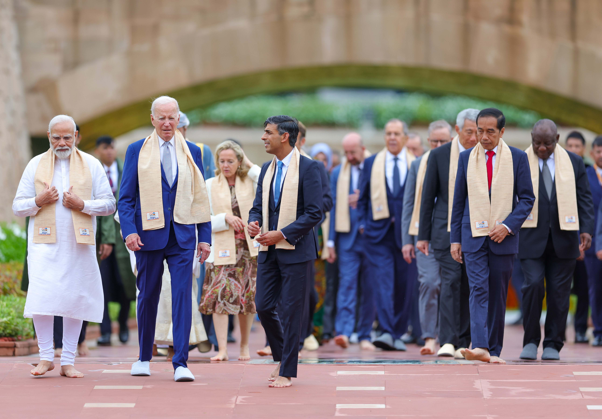

India's Soft Power Diplomacy on the Global Stage
India's utilization of soft power diplomacy within the G20 framework, shedding light on how the nation leverages its cultural, economic, and diplomatic assets to enhance its global influence position within the G20, one of the world's premier forums for international economic cooperation.